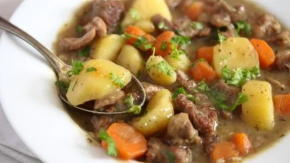

Irish Lamb Stew

A hearty Irish lamb stew
A perfectly cooked stew filled with tasty ingredients, perfect for a chilly day, and easy to make in an instant pot.
Serve as-is or with rice on the side, for four people!
Ingredients
- 1 tablespoon of butter
- 1 tablespoon of olive oil
- 1/2 teaspoon of white cooking wine
- 2 tablespoon of cold water
- 1 tablespoon of potato starch
- lamb shoulder, cubed (1 1/4 pounds)
- 1 onion, diced
- 2 shallots, diced
- 2 cloves garlic, minced
- 2 carrots, sliced into rounds
- small red potatoes, halved (3/4 pound)
- 1/2 teaspoon of dried rosemary
- 1/2 teaspoon of dried thyme
- 1 1/2 cups of beef broth
- salt and ground black pepper
Directions
- Warm butter and oil in a multi-functional pressure cooker (such as Instant Pot) set to Saute function. Add lamb and cook until browned on all sides, about 5 minutes.
Transfer to a plate. Add onion and shallots to the pot; cook and stir until translucent, 4 to 5 minutes. Add garlic and cook for 1 minute longer.
- Pour wine into the pot and scrape up any browned bits off the bottom of the pot. Cook until wine is reduced by half, 3 to 5 minutes. Place carrots and potatoes on top of onions.
Season with rosemary and thyme; stir to combine well. Arrange lamb over vegetables; pour beef broth on top.
- Close and lock the lid. Open vent for steaming. Select Meat/Stew function; set timer for 20 minutes. Allow 10 to 15 minutes for pressure to build.
- Release pressure using the natural-release method according to manufacturer's instructions, about 10 minutes. Meanwhile, mix water and potato starch until creamy.
- Unlock and remove lid. Switch to Saute function. Stir potato starch mixture into the stew; cook until thickened, 2 to 3 minutes. Season with salt and pepper.
Return to main page